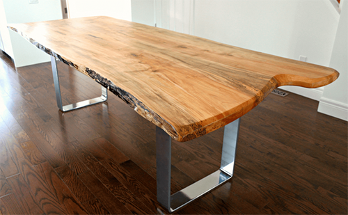

가구에서 원목이라고 할 때는 무늬목, 집성목, 합판이나 PB, MDF이 아니라 원목 소재 그대로를 가공해서 만드는 것을 의미한다.

장점은 우선 보기에 아름답고 습온도 조절, 흡음 조절 등이 타 소재에 비해 우수하여 보통 고급 가구에 사용된다.
단점으로 수축팽창이 일어나기 쉬워 뒤틀리는 일이 발생하기도 한다. 또한, 원목은 그 자체만으로는 '넓은 면적'을 만드는 것이 어렵기 때문에 만들수 있는 가구의 크기가 제한된다. 무엇보다도 가장 큰 단점은 높은 가격.
원목에 대하여 자세히 알고 싶다면 아래항목을 클릭하세요.